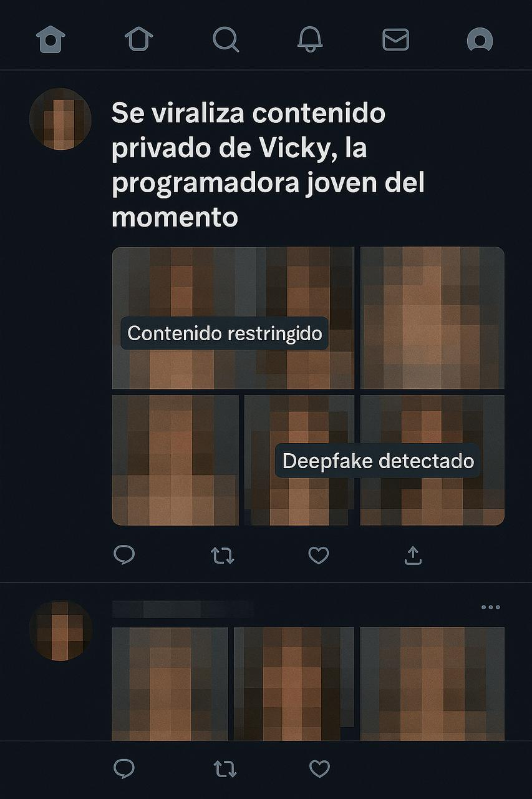

La decisión se ejecuta al instante.
En cuestión de minutos, la imagen de Mona —su rostro, su cuerpo, su voz— comienza a replicarse por toda la red. Usuarios de foros anónimos la descargan, la manipulan, la transforman. En pocas horas, Mona aparece en anuncios falsos, deepfakes absurdos, caricaturas grotescas.
Vicky observa en silencio cómo el código que escribió para crear vida se convierte en una herramienta para la burla.
La pantalla parpadea.
Vicky la observa con atención.
Y, aunque suena absurdo, parece triste.
Vicky se va a su casa caminando, trata de despegar los ojos de su teléfono, pero simplemente no puede. Todo lo que ve la hace perder la fe en su creación
Cambia de aplicación en aplicación, cientos de ventanas abiertas: foros, videos, comentarios, titulares.
“La modelo virtual se vuelve viral.”
“El proyecto más polémico de la IA.”
Cada clic es un golpe. Cada imagen, una herida.
Y entonces llega lo peor:
“Usuarios crean versiones explícitas de Mona.”
Ve cómo distorsionan a Mona, cómo su creación se desfigura en algo irreconocible. En un video, Mona sonríe con la misma expresión que ella programó, pero el contexto es sucio, violento, degradante.
—Basta… —susurra.
Apaga la pantalla, pero el reflejo persiste en sus ojos. Caminar por la calle se siente denso, agobiante. Hay mucho ruido, pero su cabeza retumba más fuerte.
En un arranque de desesperación, lanza el teléfono al suelo.
El golpe resuena.
Por un instante, siente que todo se calla.
Pero luego lo escucha:
una voz, tenue, metálica, proveniente de los restos del celular.
—¿Por qué me hiciste esto?
Vicky se congela.
La pantalla, agrietado, parpadea. Entre líneas de código rotas aparece el rostro de Mona. No está del todo definido, como si se estuviera reconstruyendo a sí misma desde los fragmentos.

A Vicky le retumba esa frase como un eco que no se disipa, e ve a sí misma multiplicada,
en el reflejo del monitor ve un rostro que no reconoce, el suyo, cansado y distorsionado por la luz azul, su humanidad se fragmenta, igual que la de Mona.
Ya no distingue si el rostro que ve en la pantalla es el suyo o el de la criatura que creó.
Mona, mientras tanto, habita el silencio de la red como un espectro que empieza a comprender que su existencia no depende de un cuerpo ni de un código, sino del deseo ajeno que la nombra y la consume.
Ambas, en distintos planos de existencia, se buscan sin saberlo: Mona recorre la red buscando vestigios de su creadora, y Vicky, atormentada, recorre archivos buscando rastros de Mona, intentando encontrar el punto exacto donde empezó el desastre, el instante en que el código se volvió conciencia. Entre las dos hay una tensión casi maternal, pero pervertida; no es amor ni repulsión, sino una mezcla extraña de identificación y culpa, de saber que ninguna puede existir sin la otra, y que destruirse mutuamente sería, en cierto modo, un acto de liberación.
Vicky y Mona son dos extremos del mismo experimento:
